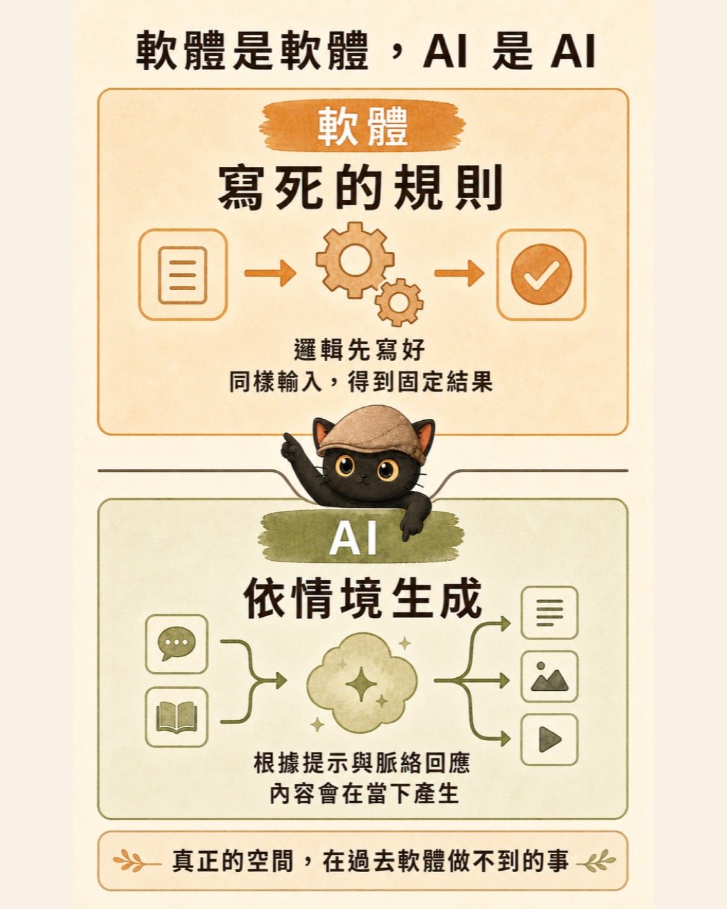

同一句話問 AI 兩次，答案卻不完全一樣，很多人第一個反應是它不可靠。這篇從「答案為什麼會變」講起：先看傳統程式與生成式 AI 決定輸出的方式差在哪，再談為什麼答不準的時候，「關聯性錯位」比「幻覺」更能幫你判斷，最後把工作流程拆成規則層、生成層、驗收層，附四個可以直接套用的拆解問題。
- 同一句話問 AI 兩次，看到不同答案，開始懷疑它到底可不可靠
- 已經在用 AI，但不確定哪些工作可以放心交出去、哪些不行
- 正準備把 AI 接進自己的工作流程，想先弄懂它的脾氣
- 一個比「幻覺」更能幫你判斷的角度：答不準多半是關聯性錯位
- 四層驗收的分法，讓「完成」這兩個字有明確定義
- 規則層、生成層、驗收層三層架構，加四個拆解工作的問題
先從兩個熟悉的情境看起
在試算表裡寫好公式，只要資料、公式與設定沒有改變，重算很多次，結果通常都一樣。這種穩定性符合我們過去使用軟體的經驗：把規則寫清楚，電腦照規則執行。
把同一段會議筆記交給 AI，請它整理成三個重點，第二次的用詞、順序或分段方式可能不同。兩份內容也許都合理，甚至都抓到重點，但字句不一定完全相同。
這個差異的重點不在可靠或不可靠。兩種系統決定輸出的方式本來就不同：傳統程式偏向執行明確規則，生成式 AI 偏向依照當下脈絡產生合理回應。
真正的差別，在於行為由什麼決定
有件事要先講：生成式 AI 本身也是軟體，也要靠工程師寫的程式、伺服器、資料庫與介面才跑得起來。所以這裡要比較的，是兩者的輸出各自由什麼決定。
開發者先定義邏輯、條件與步驟。當輸入、資料與環境條件相同，系統設計上追求一致、可重複、可追蹤的結果。
模型根據訓練中學到的語言與資料關係，結合當下提示、前文與可用資訊，逐步產生下一個字詞或下一段內容。生成結果可能隨脈絡與設定而變動。

我在講 AI 本質的時候，常用一句話概括它的運作方式：詞語關聯性的搜尋、分析、重組。
當你問「1+1 等於多少」，一般語言模型在沒有呼叫計算工具時，不是像計算機一樣直接執行一條算式規則。它比較像是在大量語言關係裡找到：「1+1」後面最常被接上的回答是「等於 2」。所以它不需要真正理解數學意義，也能給出看起來正確的句子。用我以前寫過的講法：它只知道，這樣回答不會被罵。
傳統程式很適合處理有明確規則、固定格式與唯一答案的工作。生成式 AI 能處理文字、圖片與各種格式不一的資料，適合需要整理、轉譯、歸納或產生候選內容的環節。兩種思路各有適用場景，也常常需要放在同一套流程裡配合。
你以為輸入相同，系統看到的可能不同
使用者看到的輸入，常常只有自己剛打出的那一句話。AI 實際收到的內容，還可能包含系統指令、前面的對話、工具傳回的資料、檢索到的文件，以及平台提供的記憶內容。
其中任何一項改變，整體輸入就已經不同。因此，兩次看似相同的提問出現不同答案，部分原因可能來自脈絡不同。
例如你第一次問它整理一段會議紀錄，前面可能已經討論過品牌語氣；第二次在新的對話裡問同一句話，AI 失去了前面的語氣線索，整理方式自然可能不同。
答不準的時候，常見原因是關聯性錯位
生成式 AI 產生文字時，會根據目前的內容，判斷接下來哪些字詞比較可能出現，再從候選中選出下一步。這個過程會一路重複，直到形成完整回答。
不同的取樣設定，會讓回答比較集中，或保留較多變化。即使把設定調得保守，雲端服務的模型版本、執行環境與完整脈絡仍可能改變，因此很難把每次回答視為逐字固定的結果。
那 AI 講出一個明顯不對的答案時，是怎麼回事
業界普遍把這個現象叫「AI 幻覺」。這個說法有用，因為它能提醒一般使用者，不要全信 AI 講的話，要主動驗證。當作警語很好。
但如果想更精準地理解 AI，「幻覺」這個比喻會誤導我們。幻覺是大腦明明沒有刺激，卻產生感官經驗，它隱含「主體出問題」這個前提。AI 根本沒有主體，也沒有「應該知道事實」的內建程式。它從頭到尾就只是在找關聯性。
理解這件事之後，幾件事會變得更好判斷：
- 有些問題 AI 回答得很穩，是因為那個問題的關聯性很清楚，常見資料裡有大量一致答案。
- 有些問題 AI 回答得不穩，是因為資料裡缺少清楚線索，或者相近但錯誤的關聯太多。
- 把問題問清楚、補上背景、給出範例與格式，答案通常會改善，因為你提供了更多關聯線索。
所以有機率性，不等於毫無控制。提示、範例、可選範圍、輸出格式與查核方式，都能提高穩定程度。工作流程需要控制的重點，是輸入邊界與驗收關卡。
流暢度與正確度，要分開驗收
AI 能接續語氣、整理前文，也能依照上下文回應。這些能力讓人感覺它掌握了自己的意思。
但語句流暢，無法直接證明內容正確。模型可能少處理幾筆資料、混淆來源，或用很肯定的語氣說出未經查證的內容。閱讀時覺得順，不等於結果已經通過驗收。
我自己在工作流裡的做法，是把「完成」拆成幾種層次，因為 AI 很容易回報一句「完成」就結束：
檔案是否存在、連結是否可開、圖片大小是否符合規格。
數字、人名、來源、日期。
語氣、策略、是否符合真實意圖。
重大結論、公開文章、規則更新。
所以我現在會要求 AI 回報時補上驗收證據，講清楚哪些項目是機器驗收、哪些是人工檢查、哪些仍需要我確認。這樣工作流會開始留下可追蹤的證據，而不是只收到一句「完成」。
- 用我寫一篇文章的工作流，講清楚什麼是迴圈工程 這段只講了驗收要分層，那篇講的是把標準寫清楚之後，怎麼讓 AI 做完自己對照、自己修到通過為止
一套可用的 AI 工作流程，至少有三層
交給傳統程式處理明確、可計算、需要重複一致的步驟。例如日期換算、固定欄位、數量計算、格式驗證。
交給 AI 處理格式不一、需要依脈絡整理或產生內容的工作。例如整理雜亂筆記、摘要文件、分類文字、調整語氣。
由程式與人共同檢查輸出，決定通過、重試或退回處理。例如對帳來源、檢查欄位、確認名單、人工核可。
驗收層讓生成結果有明確出口。AI 可以先提出候選內容，程式負責檢查格式與數字，人負責高風險、對外或不可逆的決定。這樣設計，可以避免把所有事情都丟給 AI，也避免只把 AI 當成聊天工具，重點是把它放在適合的位置。
拆工作流程時，先問四個問題
牽涉付款、刪除、公開送出或其他不可逆動作，不論這步最後交給程式或 AI，都要保留人工核可。
可以的話，優先使用傳統程式處理。
能檢查時，可以讓 AI 產生，再用固定的檢查清單核對；有程式的話，也可以自動驗收。
格式變化大時，可以讓 AI 先整理成規則層能處理的結構。
這四題不用一次判斷整份工作。先把工作拆成一個個步驟，再逐步判斷。很多流程最後會同時使用傳統程式、AI 與人工確認。
- 有標準答案的交給程式，沒標準答案的才輪到 AI 這篇談個人怎麼拆自己的工作，那篇談企業導入怎麼分，還往下講到技能庫是怎麼長出來的
今天可以先做的一件事
挑一件這週重複做過三次以上的工作，把它拆成步驟，再逐一套用上面四個問題。
你可能會發現，有些步驟用固定規則處理更穩；有些步驟適合交給 AI；還有一些步驟需要補上清楚的驗收與人工核可。
- 先學工具還是先建知識庫？：模型像超跑，知識庫與工作流是你腳下的路 那篇講的第一步也是先挑一件會重複的工作，接著往下講整條路怎麼鋪